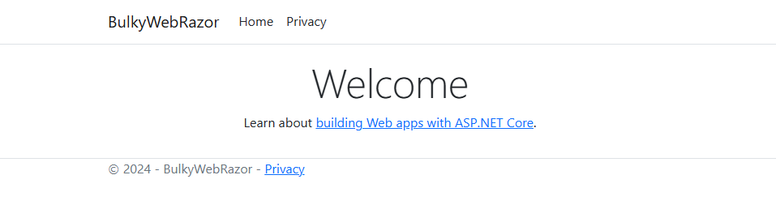
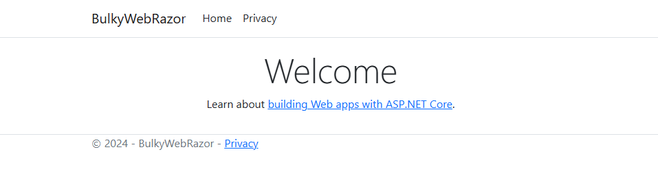

Razor Pages is a framework in ASP.NET Core aimed at simplifying page-based web application development. It uses Razor synatx to combine HTML and C# code, and each page has a paired model file(a .cshtml view and a .cshtml.cs code-behind) to keep UI and business logic together.
Razor Pages offer a more streamlined approach, making them a good choice for content-driven applications like content management systems or personal website. This structure is also more beginner-friendly compared to ASP.NET MVC’s traditional approach.
 

Basic Structure
Each page in Razor Pages is represented by a .cshtml for UI and a .cshtml.cs for page logic.
- Page File(.cshtml): This is the view template that contains HTML and embedded C# for displaying data.
- Page Model(.cshtml.cs): This acts as the page’s code-behind file, handling request, business logic and data retrieval.
Project Structure
In a typical Razor Pages project, pages are located under the Pages folder, with a structure like this:
MyRazorApp/
|-- Pages/
| |-- Index.cshtml # Main page file
| |-- Index.cshtml.cs # Main page model file
| |-- Contact/ # Contact page folder
| | |-- Contact.cshtml # Contact page
| | |-- Contact.cshtml.cs # Contact page model
|-- Startup.cs # Configuration file
|-- Program.cs # Application entry point
Razor Syntax Overview
Razor syntax uses @ symbol to embed C# code directly in HTML.
@{
var currentDate = DateTime.Now;
}
<p>Today is: @currentDate</p>
Data Binding
Data can be directly accessed from the Page Model in .cshtml view.
@model MyRazorApp.Pages.IndexModel
<h1>Welcome, @Model.Username!</h1>
<p>Your User ID is: @Model.UserId</p>
How Razor Pages Work
Each page has its own Razor Page pair, with the .cshtml file for UI and .cshtml.cs file(Page Model) for logic.
- When a user requests a page like /index, the request routes to the IndexModel.
- The Page Model method(OnGet(), OnPost(), etc.) handles the request logic.
- The .cshtml view uses the model data to render the page, which is returned to the client.
When to use Razor Pages
- Suitable for page-based web apps, like imformation sites.
- Ideal for small to medium-sized project that needs rapid development.
In summary, Razor Pages are especially useful for simpler, content-focused applications or project that requires faster setup and less complexity than MVC.